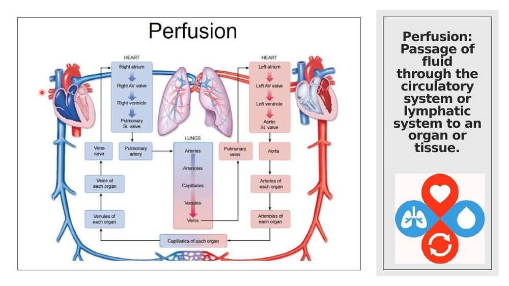
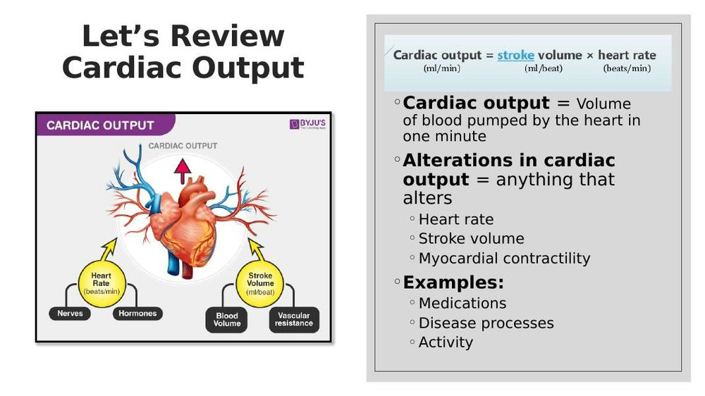
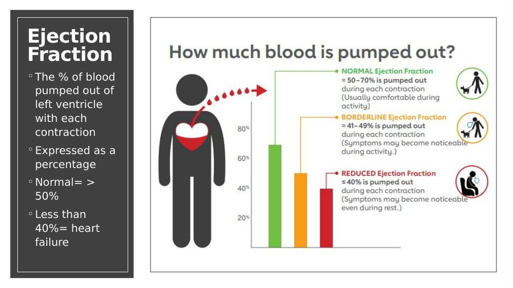
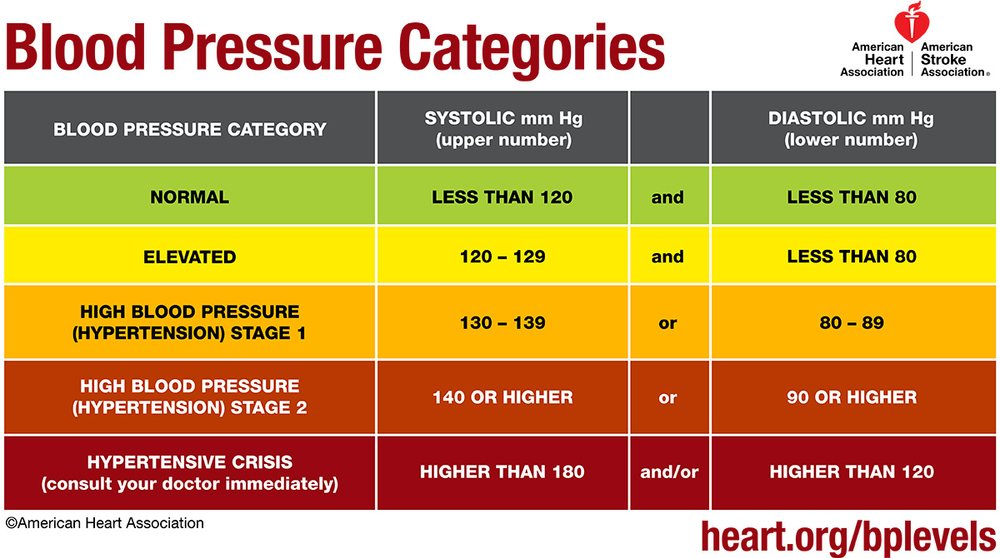
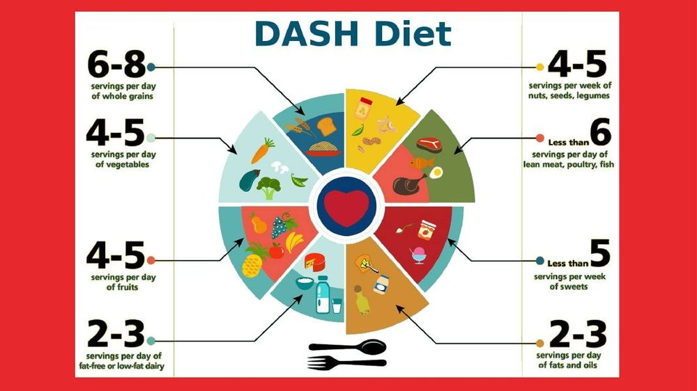
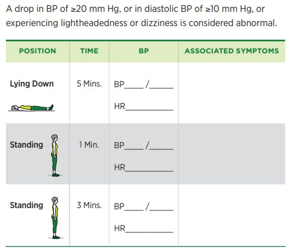
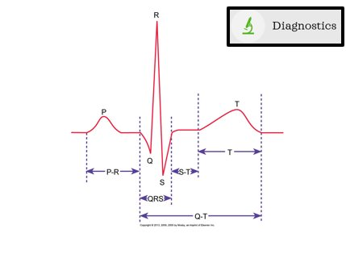
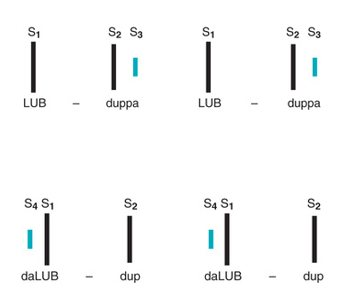

Fundamentals Review · Topic 5
Cardiovascular
Covers perfusion and cardiac output basics, blood pressure (hypertension and hypotension), hyperlipidemia and venous thromboembolism, and the cardiovascular diagnostics and nursing assessment a fundamentals student is expected to know.
Perfusion, Cardiac Output & Ejection Fraction

- Perfusion = passage of fluid through the circulatory system or lymphatic system to an organ or tissue.

- Cardiac output (CO) = volume of blood pumped by the heart in one minute. CO = stroke volume (mL/beat) × heart rate (beats/min).
- Alterations in cardiac output = anything that alters heart rate, stroke volume, or myocardial contractility — examples include medications, disease processes, and activity.

- Ejection fraction (EF) = the percentage of blood pumped out of the left ventricle with each contraction, expressed as a percentage.
- Normal EF is greater than 50%. An EF less than 40% indicates heart failure.
- Blood pressure reflects the force of blood against arterial walls; pulse pressure is the difference between systolic and diastolic pressure.
- Pulsus alternans — a pulse that alternates in strength/amplitude beat to beat — can be a sign of left ventricular failure.
- CPR review — remember the sequence as C-A-B: Compressions, Airway, Breathing.
Hypertension

| Category | Systolic (mm Hg) | Diastolic (mm Hg) | |
|---|---|---|---|
| Normal | Less than 120 | and | Less than 80 |
| Elevated | 120–129 | and | Less than 80 |
| Hypertension Stage 1 | 130–139 | or | 80–89 |
| Hypertension Stage 2 | 140 or higher | or | 90 or higher |
| Hypertensive Crisis | Higher than 180 | and/or | Higher than 120 |
- Non-modifiable risk factors: family history, age, race/ethnicity (African Americans have higher incidence and often more severe hypertension).
- Modifiable risk factors: obesity, high sodium intake, physical inactivity, excessive alcohol use, stress, smoking.
- DASH diet (Dietary Approaches to Stop Hypertension) is the recommended dietary pattern — emphasizes whole grains, vegetables, fruits, low-fat dairy, lean protein, nuts/seeds/legumes, while limiting sodium, sweets, and fats.
- Complications of uncontrolled hypertension include heart disease, stroke, kidney disease, and vision loss.

Hypotension & Orthostatic Hypotension
- Hypotension can result from many causes — dehydration/fluid loss, medications, prolonged bed rest, cardiac problems, and severe infection (septic shock) among others. Treatment targets the underlying cause.
- Symptoms: dizziness, lightheadedness, syncope (fainting), blurred vision, fatigue, weakness.

- Orthostatic (postural) hypotension = a drop in systolic BP of ≥20 mm Hg, or in diastolic BP of ≥10 mm Hg, or the onset of lightheadedness/dizziness when moving from lying to standing.
- Diagnostic protocol: measure BP and HR lying down (after 5 minutes), then standing at 1 minute, then standing again at 3 minutes — record symptoms at each position.
- Nursing care: have the patient change positions slowly (dangle at the bedside before standing), stay close by/use a gait belt for safety, encourage adequate hydration, and teach the patient to sit or lie down immediately if symptomatic.
Hyperlipidemia
- Cholesterol is either exogenous (from diet) or endogenous (made by the liver).
- Chronic hyperlipidemia contributes to atherosclerosis — plaque buildup in artery walls — which can progress to coronary artery disease (CAD) and peripheral artery disease (PAD).
- Dietary teaching: reduce saturated and trans fats, increase fiber, limit cholesterol intake, increase physical activity.
| Lab | Target |
|---|---|
| Total cholesterol | Below 200 mg/dL |
| LDL ("bad" cholesterol) | Below 100 mg/dL |
| HDL ("good" cholesterol) | Above 40–60 mg/dL (higher is better) |
| Triglycerides | Below 150 mg/dL |
A fasting lipid profile requires no food or drink (other than water) for typically 9–12 hours prior — that's the "F" for fasting. Must be drawn fasting to be accurate.
Venous Thromboembolism (VTE): DVT & PE
- A deep vein thrombosis (DVT) is a blood clot forming in a deep vein, most often in the legs. If it breaks loose and travels to the lungs, it becomes a pulmonary embolism (PE) — a life-threatening emergency.
- Risk factors: immobility/prolonged bed rest, surgery (especially orthopedic), pregnancy, oral contraceptives/hormone therapy, smoking, obesity, malignancy, prior history of DVT/PE, and long travel.
- Signs/symptoms of DVT: unilateral leg swelling, warmth, redness, and tenderness/pain in the calf; a difference in calf circumference between legs is a key assessment finding.
- Signs/symptoms of PE: sudden shortness of breath, chest pain, tachycardia, tachypnea, anxiety — a medical emergency requiring immediate attention.
- Diagnosis: venous ultrasound (Doppler) for DVT; CT pulmonary angiogram (CTPA) for PE.
- Nursing care/prevention: measure and compare calf circumference bilaterally, apply TED hose (graduated compression stockings) and/or sequential compression devices (SCDs) as ordered, encourage ankle pumps/calf pumping exercises and early ambulation, and administer prophylactic anticoagulation as ordered.
- An IVC filter (inferior vena cava filter) may be placed in patients who can't tolerate anticoagulation, to catch clots before they reach the lungs.
- Never massage a leg suspected of having a DVT — this can dislodge the clot.
Diagnostics: Labs, Chest X-ray & EKG
| Lab | Normal Range |
|---|---|
| Hemoglobin (Hgb) | Females: 12–16 g/dL. Males: 14–18 g/dL. |
| Hematocrit (Hct) | Females: 37–47%. Males: 42–52%. |
Hemoglobin and hematocrit (H&H) are part of the CBC and are drawn on almost every hospitalized patient. Hemoglobin is the iron-containing pigment on red blood cells that oxygen binds to for transport. Hematocrit is the percentage of total blood volume made up of red blood cells. Know both sets of numbers — men's values run a bit higher than women's for both.
- A chest X-ray assesses for fluid accumulation in the lungs and heart size. Typically an anterior-posterior (AP) and a lateral view are taken; the patient removes metal objects and holds their breath briefly for each image.

- EKG (ECG) reflects the heart's electrical conduction. A normal sinus rhythm means the atria and ventricles contract in the correct sequence at a normal rate. An EKG is a snapshot in time — typically about 5 minutes of recorded activity.
- Telemetry monitors heart activity continuously (as opposed to an EKG's single snapshot), viewed at the nurses' station or bedside monitor. It's common for hospitalized patients to be on telemetry.
- Electrode placement mnemonic: "White on right, snow over grass; smoke over fire" — white electrode on the patient's right side, with green below white ("snow over grass"), and black above red ("smoke over fire"). If an electrode falls off, replace it and get your instructor's help placing it correctly.
Heart Sounds

- A normal heart has two sounds per beat: S1 and S2 ("lub-dub") — should be crisp, with only one sound at each point.
- A third or fourth sound is never normal: S3 is a ventricular gallop (sounds like "Ken-TUCK-y"), and S4 is an atrial gallop. Both indicate cardiovascular dysfunction.
- Murmurs are a swishing sound caused by a problem with a valve (restricted or "floppy"/incompetent).
- Clicks occur in patients with a mechanical heart valve — the metal components closing together makes an audible click.
- Rubs are a scratchy sound from friction of the pericardial sac (pericardial friction rub).
Nursing Assessment & Care of the Cardiovascular Patient
- Assessment: cardiac/vascular history, vital signs and oxygen saturation, skin color/temperature/hydration, level of consciousness (decreased LOC can reflect decreased cerebral perfusion), peripheral pulses (assessed bilaterally and simultaneously, graded 0–4+, including dorsalis pedis/DP and posterior tibial/PT pulses), calf tenderness, edema (implies impaired venous return), and jugular venous distention (JVD) — distention at a 45° angle implies fluid volume excess. Auscultate for S1/S2 and any adventitious sounds.
- Possible NANDA nursing diagnoses: risk for unstable blood pressure, activity intolerance, decreased cardiac output, ineffective tissue perfusion, fatigue, ineffective health maintenance, risk for injury (e.g. from orthostatic hypotension).
- Common interventions: strict intake and output monitoring, oxygen therapy, telemetry, medications (diuretics, digoxin, vasodilators, ACE inhibitors, beta blockers, antiplatelets), lab monitoring, heart-healthy/DASH diet, stress reduction, and preventing thrombus formation (especially in at-risk patients).
- Patient teaching: make the plan patient-centered with the patient's input for better buy-in; smoking cessation; limit alcohol; manage stress, hyperlipidemia, and diabetes (all modifiable risk factors); encourage appropriate nutrition and exercise; always evaluate whether the patient met their goal and adjust the plan if not.
Self-Test Flashcards
Click a card to flip it and check your answer.
Practice Questions
All 20 Must Know + Extra Practice questions for this section, pulled from the same bank as Build Your Own Exam. Answer each, then submit to see your score and rationales.